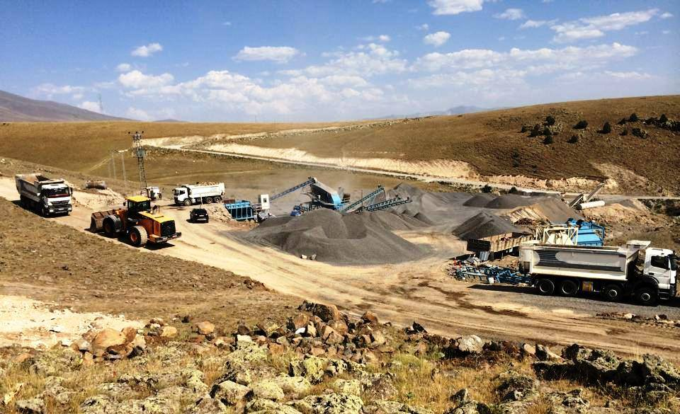

Beton üretiminde kullanılan kum (ince agrega), betonun işlenebilirliğini, dayanımını ve uzun ömürlülüğünü doğrudan etkileyen kritik bir bileşendir. Yanlış kum seçimi; betonda çatlaklara, düşük dayanıma, geçirimsizlik sorunlarına ve donma-çözülme hasarlarına yol açabilir. Özellikle Erzurum gibi sert kış koşullarının ve deprem riskinin bulunduğu bir bölgede, beton için doğru kumu seçmek yapı güvenliği açısından hayati önem taşır. Peki, beton için en uygun kum hangisidir? Doğal kum mu yoksa kırma kum mu tercih edilmelidir? Bu rehberde tüm bu soruların cevaplarını bilimsel verilerle bulacaksınız.
Beton İçin İdeal Kumun Özellikleri
Beton üretiminde kullanılacak kumun aşağıdaki teknik özelliklere sahip olması gerekir:
- 📏 Tane Boyutu (Granülometri): 0-4 mm arası, farklı boyutlarda tanelerin dengeli dağılımına sahip olmalıdır. Tek bir boyutta kum, boşluklu bir beton yapısına neden olur.
- 🧼 Temizlik (İnce Madde Oranı): 0.063 mm'den ince malzeme (kil, silt) oranı %3'ü geçmemelidir. Aşırı ince madde, betonun su ihtiyacını artırarak dayanımı düşürür ve rötre çatlaklarına yol açar.
- 🔬 Tane Şekli: Köşeli ve pürüzlü taneler, çimento hamuru ile daha iyi aderans (bağ kuvveti) sağlar. Yuvarlak taneler işlenebilirliği artırır ancak dayanımı düşürür.
- 💧 Su Emme Oranı: Düşük su emme kapasitesine sahip kumlar, betonun su/çimento dengesini korur ve donma-çözülme direncini artırır.
- 🧪 Organik Madde İçermemesi: Kum; bitki kökü, humus, kömür parçacıkları gibi organik maddeler içermemelidir. Organik maddeler çimentonun prizini geciktirir ve dayanımı düşürür.
Doğal Kum (Dere Kumu) mu, Kırma Kum mu?
Beton üretimi için iki temel kum türü vardır. Hangisinin daha iyi olduğu, projenin gereksinimlerine bağlıdır.
🌊 Doğal Kum (Dere Kumu)
Akarsu yataklarından elde edilen, yuvarlak taneli ve pürüzsüz yüzeyli kumdur.
- ✅ Avantajları: İşlenebilirliği yüksektir, daha az su ister, pompalanması kolaydır.
- ❌ Dezavantajları: Yuvarlak taneler çimento ile daha zayıf bağ oluşturur, bu nedenle beton dayanımı kırma kuma göre daha düşüktür. Ayrıca doğal kaynakların korunması açısından kullanımı sınırlandırılmaktadır.
⛰️ Kırma Kum (Taş Tozu / Mıcır Kumu)
Taş ocaklarından çıkarılan kayaların konkasörlerde kırılmasıyla elde edilen köşeli ve pürüzlü yüzeyli kumdur.
- ✅ Avantajları: Köşeli yapısı sayesinde çimento hamuru ile mükemmel aderans sağlar, beton dayanımı doğal kuma göre belirgin şekilde yüksektir. Erzurum'da ME-KA İnşaat'ın kendi bazalt ocaklarından ürettiği kırma kum, donma-çözülmeye karşı üstün direnç gösterir.
- ❌ Dezavantajları: İşlenebilirliği doğal kuma göre daha düşüktür, daha fazla su ve akışkanlaştırıcı katkı gerektirebilir.
Doğal Kum ve Kırma Kum Karşılaştırması
| Özellik | Doğal (Dere) Kum | Kırma Kum |
|---|---|---|
| Tane Şekli | Yuvarlak, pürüzsüz | Köşeli, pürüzlü |
| İşlenebilirlik | Yüksek | Orta |
| Beton Basınç Dayanımı | Orta | Yüksek |
| Su İhtiyacı | Düşük | Daha yüksek |
| Donma-Çözülme Direnci | Orta | Yüksek (bazalt kökenli ise) |
| Erzurum İçin Öneri | Sıva, şap, harç | Taşıyıcı betonlar (C25+) |
👉 Sonuç: Erzurum'da taşıyıcı betonlar (kolon, kiriş, radye temel) için mutlaka yıkanmış, köşeli kırma kum tercih edilmelidir. Doğal kum, taşıyıcı olmayan harç, sıva ve şap işlerinde kullanılabilir.
Beton Kumunda İnce Madde Oranının Önemi
Kumun içerisinde bulunan 0.063 mm'den ince taneler (kil, silt, taş unu) "ince madde" olarak adlandırılır. Beton kumunda bu oranın %3'ü geçmemesi istenir. Aşırı ince madde:
- ❌ Betonun su ihtiyacını artırır → Su/çimento oranı yükselir → Dayanım düşer.
- ❌ Rötre (büzülme) çatlaklarını artırır.
- ❌ Donma-çözülme direncini azaltır (Erzurum için kritik).
ME-KA İnşaat, beton üretiminde kullanılan tüm kırma kumları yıkama tesislerinden geçirerek ince madde oranını standartların altında tutar.
Erzurum'da Beton İçin En Uygun Kum Hangisidir?
Erzurum'un sert kış koşulları, donma-çözülme döngüleri ve deprem riski göz önüne alındığında:
- 🏢 Taşıyıcı Betonlar (C25-C35): Yıkanmış, 0-3 mm veya 0-4 mm bazalt kökenli kırma kum kullanılmalıdır. Bu kum, yüksek dayanım ve don direnci sağlar.
- 🧱 Grobeton ve Düşük Dayanımlı Betonlar (C16-C20): Daha ekonomik olan doğal dere kumu veya yıkanmamış kırma kum kullanılabilir. Ancak ince madde oranı yine de kontrol edilmelidir.
- 🎨 Sıva ve Şap: Doğal dere kumu (0-1 mm veya 0-3 mm) işlenebilirlik açısından idealdir.
Beton Kumu Seçiminde Sık Yapılan Hatalar
- ❌ Sadece fiyata bakarak en ucuz kumu seçmek: Ucuz kum genellikle yıkanmamış, ince madde oranı yüksek ve organik madde içeren kumdur. Beton dayanımını ciddi şekilde düşürür.
- ❌ Deniz kumu kullanmak: Deniz kumu tuz (klorür) içerir. Betonarme yapılarda donatı korozyonuna neden olur ve yapı ömrünü kısaltır. Erzurum'da kesinlikle kullanılmamalıdır.
- ❌ Tek boyutlu kum kullanmak: Sadece ince veya sadece kalın kum kullanmak, betonda boşluklu bir yapıya neden olur. Farklı boyutların karışımı (iyi gradasyon) şarttır.
📞 Erzurum'da Beton İçin En Uygun Yıkanmış Kırma Kum Tedariği
ME-KA İnşaat, kendi bazalt ocaklarından ürettiği, yıkanmış ve kalite belgeli kırma kumlarıyla projelerinize dayanıklılık katar. Ücretsiz fiyat teklifi alın.
✅ Yıkanmış + elenmiş + dona dayanıklı bazalt kırma kum
Sık Sorulan Sorular
Beton için en iyi kum hangisidir?
Taşıyıcı betonlar için yıkanmış, 0-3 mm veya 0-4 mm bazalt kökenli kırma kum en iyisidir.
Dere kumu betonda kullanılır mı?
Evet, ancak yüksek dayanım gerektiren taşıyıcı betonlarda kırma kum tercih edilmelidir. Dere kumu daha çok sıva, harç ve grobetonda kullanılır.
Yıkanmış kum ne demek?
İçerisindeki kil, silt ve organik maddelerin su ile yıkanarak uzaklaştırıldığı, temiz kum demektir. Beton için yıkanmış kum şarttır.
1 m³ beton için ne kadar kum gerekir?
Yaklaşık 700-800 kg (0.45-0.50 m³) ince agrega (kum) kullanılır.